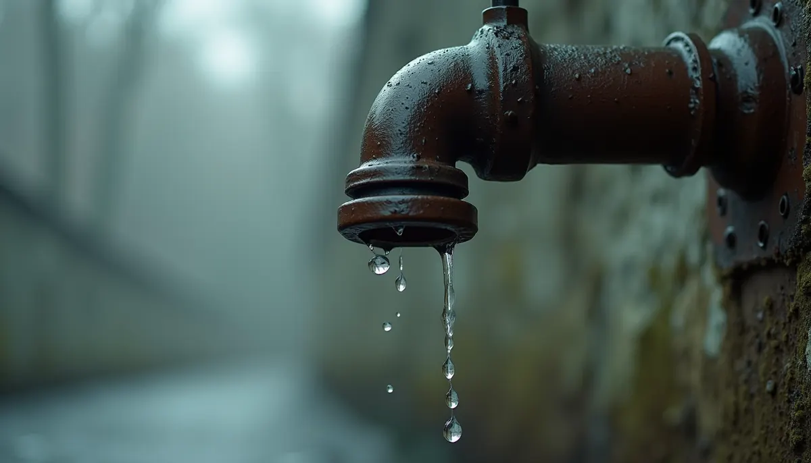
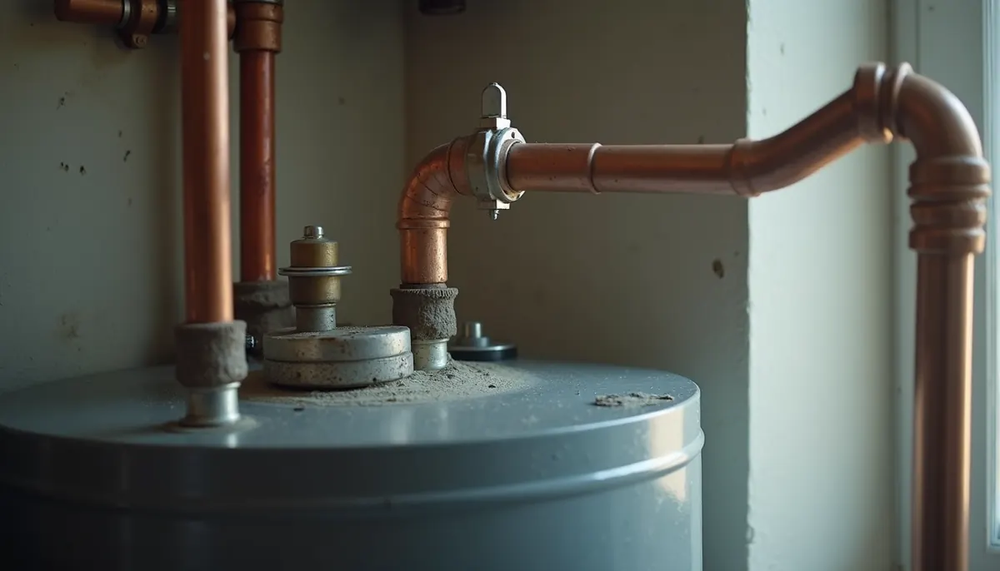
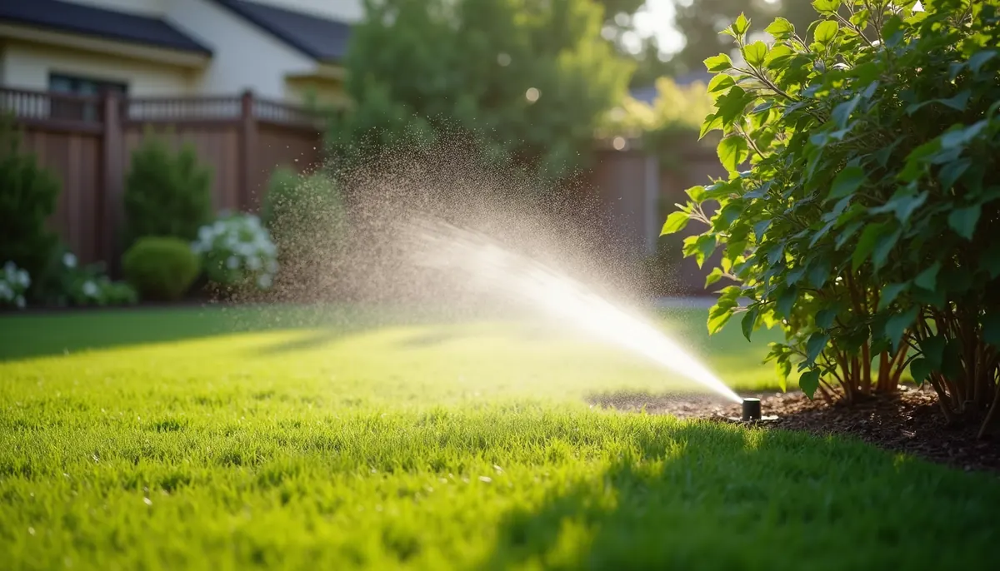

As winter's chill fades away, homeowners often look forward to the joys of spring—sunshine, flowers in bloom, and spending time outside. Yet, one critical area that requires attention is your plumbing system. Ignoring your plumbing during this transition can lead to serious, costly problems. Here’s why paying attention to your plumbing as temperatures warm is vital.
The Impact of Seasonal Changes on Plumbing
Spring brings changing temperatures and increased rainfall. These fluctuations can put significant stress on your plumbing system. For instance, a study showed that about 10% of homes experience water leaks due to frozen pipes thawing in the spring. The freeze-thaw cycle can cause pipes to crack, leading to leaks when water begins to flow again. Inspecting your plumbing before the spring rains can save you from unexpected repairs, which can average around $1,000's for a pipe replacement.
As temperatures rise, your water usage likely will too, particularly with home renovations, gardening, and outdoor projects. Ensuring your plumbing can handle this increased demand is crucial to avoid sudden breakdowns that might disrupt your spring activities.
Common Spring Plumbing Issues
Leaks from Freeze Damage
Leaks from frozen pipes are among the most common issues homeowners face in spring. Look for visible signs of leaks, such as water stains on ceilings or walls. It's reported that even a small drip can waste over 10,000 gallons of water annually. Addressing minor leaks quickly can prevent them from turning into extensive repairs later.
Clogged Drains
As spring blooms, natural debris like leaves and pollen can clog your drainage systems. Maintenance activities, such as cleaning gutters and checking outdoor drainage, can help you avoid major blockages. According to experts, clogs can lead to backups that might cost upwards of $300 to fix.
Outdoor Faucets and Sprinkler Systems
With the arrival of spring, gardening and lawn care begin. Ensure that your outdoor faucets are leak-free and working properly. Don't forget to check your sprinkler systems as well. A malfunctioning sprinkler system can waste thousands of gallons of water each season and create soggy patches in your yard.

Signs That Your Plumbing Needs Attention
Being proactive in your plumbing maintenance can prevent costly headaches. Here are signs that suggest your plumbing system may need some attention:
- Unusual sounds: Hearing gurgling sounds from the drains can indicate a blockage or venting issue.
- Low water pressure: A sudden drop in water pressure might signal leaks or clogs in your plumbing.
- Discoloration of water: If the water from your faucets appears rusty or brown, it’s likely due to rust or sediment buildup that can affect pipe integrity.
Noticing these signs early can save you from more severe damage and higher costs later.
Preventative Measures for Spring Plumbing Care
To dodge plumbing emergencies this spring, consider these practical preventative steps:
- Inspect and Insulate Pipes: Examine visible pipes for cracks or signs of damage. Insulating pipes in areas that might experience temperature drops can safeguard against potential issues.
- Routine Drain Cleaning: Scheduling professional cleaning can effectively remove built-up debris, ensuring smooth plumbing flow. Regular cleaning can also help avoid larger, costlier problems in the future.
- Test Your Water Heater: Spring is a perfect time to flush your water heater to eliminate sediment build-up and maintain efficiency. Be sure to test the temperature and pressure relief valve to prevent future failures.

When to Seek Professional Help
While homeowners can handle some tasks, others are best left to skilled professionals at Angle Stop Plumbing. Scheduling a plumbing inspection in spring can help identify potential issues before they escalate. Angle Stop Plumbing has the tools and expertise to spot problems that an untrained eye might miss, providing solutions that can save time and money.
Peace of Mind This Spring
As warmer weather approaches, don’t overlook your plumbing system. Dangers like old pipes, clogged drains, and faulty outdoor setups can lead to substantial water damage and expensive repairs. By taking proactive measures to inspect, maintain, and address any problems, you can enjoy the beauty of spring without the stress of plumbing disasters.
Taking a few simple steps will protect your home and give you peace of mind. Keep a close eye on your plumbing as you transition into spring, making sure it is ready to handle the season’s demands.
